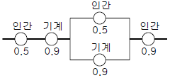
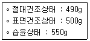
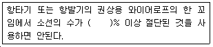

건설안전산업기사 (2008-09-07 기출문제)
1과목: 산업안전관리론
1. 다음 중 태풍, 폭우 등의 이상사태 발생시 관리자나 감독자가 기계ㆍ기구, 설비 등의 기능상 이상 유무에 대하여 점검하는 것을 무엇이라 하는가?
- 일상점검
- 특별점검
- 정기점검
- 수시점검
(정답률: 88%)

2. 사고예방대책의 기본 원리 5단계 중 "3E"를 적용하기에 가장 적합한 단계는?
- 안전관리조직
- 현상파악
- 사고분석
- 시정책의 적용
(정답률: 54%)
3. 다음 중 알더퍼(Alderfer)의 ERG 이론에 의한 욕구의 분류에 해당되지 않는 것은?
- 존재욕구
- 관계욕구
- 성장욕구
- 안전욕구
(정답률: 52%)
4. 기억 과정 중 과거에 경험하였던 것과 비슷한 상태에 부딪쳤을 때 떠오르는 것을 무엇이라 하는가?
- 파지(retention)
- 기명(memorizing)
- 재생(recall)
- 재인(recognition)
(정답률: 74%)
5. 교육방법 중 강의법(Lecture)의 장점으로 볼 수 없는 것은?
- 강사의 입장에서 시간의 조정이 가능하다.
- 참가자는 긍정적이며, 능동적 입장에 놓인다.
- 전체적인 교육내용을 제시하는데 유리하다.
- 비교적 많은 인원을 대상으로 단시간에 지식을 부여할 수 있다.
(정답률: 66%)
6. 다음 중 암모니아용 방독마스크의 정화통 외부 측면의 색상으로 옳은 것은?
- 흑색
- 황색
- 녹색
- 적색
(정답률: 52%)
7. 재해발생과 관련한 하인리히의 도미노 이론에서 핵심적인 요소로서 그 이전 단계에서 결함이 발생하여도 이 요소를 제거하면 사고가 발생되지 않는 사고 직전의 단계에 해당하는 것은?
- 관리 구조
- 제어의 부족
- 개인적 결함
- 불안전한 행동 및 상태
(정답률: 72%)
8. 다음 중 강의식 교육지도에서 가장 많은 시간이 할당되는 단계는?
- 도입
- 제시
- 적용
- 확인
(정답률: 60%)
9. 리더십에 있어서 권한의 역할 중 지도자 자신이 자신에게 부여한 권한을 무엇이라 하는가?
- 보상적 권한
- 강압적 권한
- 합법적 권한
- 전문성의 권한
(정답률: 64%)
10. 다음 중 산업심리의 5대 요소에 해당하지 않는 것은?
- 적성
- 감정
- 기질
- 동기
(정답률: 62%)
11. 다음 중 교육과제에 정통한 전문가 4~5명이 피교육자 앞에서 자유로이 토의를 실시한 다음에 피교육자 전원이 참가하여 사회자의 사회에 따라 토의하는 방식을 무엇이라 하는가?
- 포럼(forum)
- 패널 디스커션(panel discussion)
- 심포지엄(symposium)
- 버즈 세션(buzz session)
(정답률: 60%)
12. 주의(Attention)의 특징 중 여러 종류의 자극을 자각할 때, 소수의 특정한 것에 한하여 주의가 집중되는 것을 무엇이라 하는가?
- 선택성
- 방향성
- 변동성
- 검출성
(정답률: 68%)
13. 다음 중 O.J.T(On the Job Training)에 관한 설명으로 가장 적절한 것은?
- 집합교육형태의 훈련이다.
- 다수의 근로자에게 조직적 훈련이 가능하다.
- 직장의 실정에 맞게 실제적 훈련이 가능하다.
- 전문가를 강사로 활용할 수 있다.
(정답률: 61%)
14. 기업 내 정형교육으로 감독자를 대상으로 실시하는 것으로 작업을 가르치는 법, 작업의 개선방법 및 대인관계 능력 등을 주로 교육하는 것은?
- TWI(Training Within Industry)
- ATT(American Telephone & Telegram co.)
- MTP(Management Training Program)
- CCS(Civil Communication Section)
(정답률: 65%)
15. 적응기제(adjustment mechanism) 중 자신조차도 승인할 수 없는 욕구를 타인이나 사물로 전환시켜 바람직하지 못한 욕구로부터 자신을 지키려는 것을 무엇이라 하는가?
- 투사(projection)
- 합리화(rationalization)
- 보상(compensation)
- 동일화(identification)
(정답률: 58%)
16. A 공장의 도수율이 8 이고, 강도율이 2.4 일 때 종합재해지수(FSI)는 약 얼마인가?
- 0.3
- 3.33
- 4.38
- 19.2
(정답률: 63%)
17. 산업안전보건법상 사업내 안전ㆍ보건교육 중 채용시의 교육 내용에 해당하지 않는 것은? (단, 산업안전보건법 및 일반관리에 관한 사항은 제외 한다.)
- 기계ㆍ기구의 위험성과 작업의 순서 및 동선에 관한 사항
- 현장 안전개선방법 및 조사방법에 관한 사항
- 산업보건 및 직업병 예방에 관한 사항
- 물질안전보건자료에 관한 사항
(정답률: 45%)
18. 제조업자는 제조물의 결함으로 인하여 생명ㆍ신체 또는 재산에 손해(그 제조물에 대하여만 발생한 손해를 제외한다)를 입은 자에게 그 손해를 배상하여야 하는데 이를 무엇이라 하는가?
- 입증 책임
- 제조물 책임
- 담보 책임
- 연대 책임
(정답률: 66%)
19. 다음 중 기업의 산업재해에 대한 과거와 현재의 안전성적을 비교, 평가한 점수로 안전관리의 수행도를 평가하는데 유용한 것은?
- safe-T-score
- 평균강도율
- 종합재해지수
- 안전활동율
(정답률: 66%)
20. 1000명의 근로자가 주당 45시간씩 연간 50주를 근무하는 A 기업에서 질병 및 그 밖에 사유로 인하여 5%의 결근율을 나타내고 있다. 이 기업에서 연간 60건의 재해가 발생하였다면 이 기업의 도수율은 약 얼마인가?
- 25.12
- 26.67
- 28.07
- 51.64
(정답률: 41%)
2과목: 인간공학 및 시스템안전공학
21. 시스템 안전 분석방법 중 관리, 설계, 생산, 보전 등 전반적인 광범위한 분야에서 안전성을 확보하기 위한 기법으로 이미 상당한 안전이 확보되어 있는 장소에서 더 고도의 안전 달성을 목적으로 하는 것은?
- ETA
- FMEA
- MORT
- THERP
(정답률: 70%)
22. man-machine system 에서 인간의 신뢰도를 0.5, 기계의 신뢰도를 0.9로 하여 다음 [그림]과 같이 직렬 및 병렬작업을 병행할 때 이 시스템의 신뢰도는 얼마인가?(단, 인간과 기계의 고장발생은 독립적이다.)

- 0.3848
- 0.4557
- 0.6866
- 0.9575
(정답률: 70%)
23. 다음 중 추천반사율이 높은 것에서부터 낮은 순으로 배열된 것은?
- 바닥 > 가구 > 벽 > 천장
- 바닥 > 벽 > 가구 > 천장
- 천장 > 가구 > 벽 > 바닥
- 천장 > 벽 > 가구 > 바닥
(정답률: 55%)
24. 진동이 퍼포먼스에 미치는 영향 중 시각 퍼포먼스는 일반적으로 진동수가 어느 정도일 때 가장 나빠지는가?
- 1~5Hz
- 10~25Hz
- 30~50Hz
- 55~75Hz
(정답률: 32%)
25. 상대습도가 100%, 온도가 21℃ 일 때 실효온도(effectivetemperature)는 얼마인가?
- 10.5℃
- 19℃
- 21℃
- 31.5℃
(정답률: 50%)
26. 다음 중 산업안전보건법상 "강렬한 소음작업"이라 함은 1일 8시간 작업을 기준으로 몇 dB 이상의 소음이 발생하는 작업을 말하는가?
- 85
- 90
- 95
- 100
(정답률: 26%)
27. 시스템의 수명곡선(욕조곡선)에서 안전진단 및 적당한 보수에 의해 방지할 수 있는 고장의 형태는?
- 초기고장
- 우발고장
- 마모고장
- 설계고장
(정답률: 35%)
28. 다음 중 작업장에서 발생하는 소음에 대한 대책으로 가장 적극적인 대책은?
- 소음원의 격리
- 소음원의 제거
- 귀마개 등 보호구의 착용
- 덮개 등 방호장치의 설치
(정답률: 71%)
29. 자극들간의, 반응들간의, 혹은 자극 - 반응 조합의 관계가 인간의 기대와 모순되지 않는 것을 무엇이라 하는가?
- 판별성
- 지각성
- 일치성
- 양립성
(정답률: 71%)
30. 안전성 평가의 기본원칙을 6단계로 나누었을 때 가장 먼저 수행해야 되는 것은?
- 작업조건 측정
- 정성적 평가
- 정량적 평가
- 관계자료의 정비검토
(정답률: 50%)
31. 설비보전 방법 중 설비의 열화를 방지하고 그 진행을 지연시켜 수명을 연장하기 위한 점검, 청소, 주유 및 교체 등의 활동을 무엇이라 하는가?
- 사후 보전
- 개량 보전
- 일상 보전
- 보전 예방
(정답률: 32%)
32. 교통표지판의 삼각형은 경고를, 안전보건표지의 사각형은 안내를 의미하듯이 부호가 이미 고안되어 있어 이를 배워야 하는 부호를 무엇이라 하는가?
- 묘사적 부호
- 추상적 부호
- 임의적 부호
- 공간적 부호
(정답률: 43%)
33. 건설현장의 안전표지판의 반사율이 70% 이고, 인쇄된 글자의 반사율이 15% 이면, 대비는 약 몇 % 인가?
- 56
- 65
- 79
- 88
(정답률: 56%)
34. 100개의 부품을 육안 검사하여 20개의 불량품이 발견 되었다. 실제 불량품이 40개였다면 인간에러확률은 약 얼마인가?
- 0.2
- 0.3
- 0.4
- 0.5
(정답률: 47%)
35. 다음 중 인간의 눈에 관한 설명으로 옳은 것은?
- 황반(혹은 중심와, fovea)에는 간상(rod)세포가 집중되어 있다.
- 간상(rod)세포는 색을 구별하는 기능을 가지고 있다.
- 빛이 처음으로 도달하는 곳은 수정체이다.
- 수정체의 초점 조절작용능력은 diopter(D) 값으로 나타내는데 "1/초점거리"로 정의된다.
(정답률: 35%)
36. 조종레버를 10° 움직이면 표시장치는 1cm 이동하는 조종장치가 있다. 레버의 길이가 20cm 라고 하면 이 조종장치의 C/D비는 약 얼마인가?
- 1.27
- 2.38
- 3.49
- 4.51
(정답률: 37%)
37. 다음 중 인체에서 뼈의 주요기능으로 볼 수 없는 것은?
- 신체의 지지
- 장기의 보호
- 조혈작용
- 대사작용
(정답률: 61%)
38. 실현 가능성이 동일한 2개의 대안이 있을 때 총 정보량은 몇 bit 인가?
- 0.5
- 1
- 2
- 4
(정답률: 41%)
39. 결함수 분석법에서 일정 조합 안에 포함되어 있는 기본사상들이 모두 발생하지 않으면 틀림없이 정상사상(top event)이 발생되지 않는 조합을 무엇이라고 하는가?
- 컷셋(cut set)
- 패스셋(path set)
- 부울대수(Boolean algebra)
- 결함수셋(fault tree set)
(정답률: 63%)
40. 다음 중 음의 크기를 나타내는 phon값과 sone값의 관계를 올바르게 나타낸 것은?
- sone값 = 2 (phon값 - 40)/10
- phon값 = 2 (phon값 - 40)/10
- sone값 = 2(phon값 - 40)
- phon값 = 2(sone값 - 40)
(정답률: 25%)
3과목: 건설시공학
41. 토질시험 중 흙의 강도 및 변형계수를 결정하는 시험으로 고무막에 넣은 원통형의 시료를 일정한 측압을 가함과 동시에 수직하중을 서서히 증대시켜 파괴하는 시험은?
- 투수시험
- 삼축압축시험
- 전단시험
- 다지기시험
(정답률: 62%)
42. 수밀 콘크리트 제작 방법에 관한 사항 중 옳지 않은 것은?
- 틈새가 없는 질이 우수한 거푸집을 사용한다.
- 가급적이면 물ㆍ시멘트 비를 크게 한다.
- 이음치기를 하지 않는 것이 좋다.
- 양생을 충분히 하는 것이 좋다.
(정답률: 74%)
43. 다음 중 지반 개량 공법에 해당되지 않는 것은?
- 다짐법
- 탈수법
- 치환법
- 아일랜드 공법
(정답률: 74%)
44. 콘크리트를 수직부재인 기둥과 벽, 수평 부재인 보, 슬래브를 구획하여 타설하는 공법을 무엇이라 하는가?
- V.H 분리타설 공법
- N.H 분리타설 공법
- H.S 분리타설 공법
- H.N 분리타설 공법
(정답률: 50%)
45. 다음 중 건설시공분야의 향후 발전방향으로 옳지 않은 것은?
- 가설구조물의 강재화
- 시공의 기계화
- 재료의 프리패브(pre-fab)화
- 공법의 습식화
(정답률: 79%)
46. 벽식 프리캐스트 철근콘크리트조를 시공하는 공법으로 중층의 공동주택에 폭넓게 채용되는 PC공법은?
- WPC공법
- HPC공법
- RPC공법
- Half PC공법
(정답률: 36%)
47. 지반의 토질시험 중에서 무게 63.5kg의 추를 76cm 높이에서 낙하시켜 샘플러가 30cm 관입하는데 따른 저항치를 측정하는 시험을 무엇이라 하는가?
- 전단시험
- 지내력시험
- 표준관입시험
- 베인시험
(정답률: 74%)
48. 외관을 지중에 박아 관속에 콘크리트를 넣고 추로 다져 구근을 만들며 외관을 조금씩 빼내서 만드는 현장 콘크리트말뚝은?
- 콤프레솔파일(compressol pile)
- 프리팩트파일(prepacked pile)
- 프랭키파일(franky pile)
- 레이몬드파일(raymond pile)
(정답률: 25%)
49. 공사 감리자에 대한 설명 중 옳지 않은 것은?
- 시공계획의 검토 및 조언을 한다.
- 문서화된 품질관리에 대한 지시를 한다.
- 품질하자에 대한 수정방법을 제시한다.
- 건축의 형상, 구조, 규모 등을 정리한다.
(정답률: 74%)
50. 콘크리트 공사에서 비교적 간단한 구조의 합판거푸집을 적용할 때 사용되면 측압력을 부담하지 않고 단지 거푸집의 간격만 유지시켜 주는 역할을 하는 것은?
- 컬럼밴드
- 턴버클
- 폼타이
- 세퍼레이터
(정답률: 69%)
51. 다음 중 건축공사의 착공식 이후 가장 먼저 착수해야 하는 공사는?
- 지붕 및 홈통공사
- 가설공사
- 지정공사
- 구체공사
(정답률: 58%)
52. 다음 중 굳지 않은 콘크리트의 측압에 대한 영향이 가장 작은 것은?
- 굳지 않은 콘크리트의 다지기 방법
- 기온 및 대기의 습도
- 콘크리트 부어넣기 속도
- 콘크리트 발열
(정답률: 54%)
53. 철골부재의 용접에서 용접상부에 따라 모재가 녹아 용착금속이 채워지지 않고 홈으로 남게 된 부분은?
- 오버랩(overlap)
- 언더컷(undercut)
- 블로우홀(blowhole)
- 크랙(crack)
(정답률: 60%)
54. 철골공사의 구멍뚫기에 있어서 앵커볼트의 공칭 축직경 (d)에 대한 구멍직경(D)으로 옳은 것은?
- d + 1.0mm
- d + 1.5mm
- d + 3.0mm
- d + 5.0mm
(정답률: 34%)
55. 프로젝트의 자금조달과 설계 및 엔지니어링, 시공의 전부를 도급 받아 시설물을 완성하고 일정기간의 운영으로 투자자금을 회수한 후 발주자에게 양도하는 공사계약제도 방식은?
- 파트너링 방식(partnering agreement)
- BOT방식(build operate transfer contract)
- 공사관리계약(construction management contract)
- 턴키계약(turnkey contract)
(정답률: 55%)
56. 다음 중 말뚝박기 기계인 디젤해머(diesel hammer)의 일반적인 설명으로 옳지 않은 것은?
- 박는 속도가 빠르다.
- 타격음이 작다.
- 타격에너지가 크다.
- 운전이 용이하다.
(정답률: 70%)
57. 다음 중 지중보의 역할에 대한 설명으로 옳은 것은?
- 흙의 허용 지내력도를 크게 한다.
- 주각을 서로 연결시켜 고정상태로 하여 부동침하를 방지한다.
- 지반을 압밀하여 지반강도를 증가시킨다.
- 콘크리트의 허용 지내력도를 크게 한다.
(정답률: 52%)
58. 프리팩트파일의 일종으로 어스오거로 굴착한 후에 철근을 넣고 모르타르 주입관을 삽입한 다음 자갈을 충전하고 모르타르를 주입하여 만든 것은?
- PIP말뚝
- CIP말뚝
- MIP말뚝
- 슬러리월
(정답률: 37%)
59. 다음 중 철골세우기용 기계설비가 아닌 것은?
- 가이데릭
- 스티프레그데릭
- 진폴
- 드래그라인
(정답률: 55%)
60. 콘크리트의 압축강도를 측정하기 위한 비파괴시험 방법으로서 가장 일반적으로 사용되고 있는 방법은?
- 슈미트해머 시험
- 슬럼프 시험
- 코어 시험
- 초음파 탐상시험
(정답률: 59%)
4과목: 건설재료학
61. 다음 중 굳지 않은 콘크리트의 재료분리 원인이 아닌것은?
- 굵은골재의 최대치수가 지나치게 큰 경우
- 배합이 적절하지 않은 경우
- 단위수량이 너무 많은 경우
- AE제나 플라이애쉬를 첨가한 경우
(정답률: 49%)
62. 트럭믹서에 재료만 공급받아서 현장으로 가는 도중에 혼합하여 사용하는 콘크리트는?
- 센트럴 믹스트 콘크리트
- 슈링크 믹스트 콘크리트
- 트랜싯 믹스트 콘크리트
- 배쳐플랜트 콘크리트
(정답률: 33%)
63. 프탈산과 글리세린 수지에 지방산, 유지, 천연수지를 넣어 변성시킨 포화폴리에스테르 수지로써 페인트, 바니시, 래커 등의 도료로 이용되는 것은?
- 실리콘 수지
- 멜라민 수지
- 알키드 수지
- 폴리우레탄 수지
(정답률: 24%)
64. 다음 중 목재의 부패에 관한 설명으로 옳지 않은 것은?
- 목재의 변재부가 청색으로 변하는 것을 속칭 청부라 하는데, 청부는 목재의 강도에 거의 영향을 미치지 않는다.
- 상수면하에 박은 기초말뚝 또는 수중에 완전침수시킨 목재는 습기로 인해 쉽게 부패한다.
- 균의 번식에 적당한 온도는 20 ~ 40℃ 이다.
- 대다수의 균은 CO2량이 80% 이상이 되면 발육이 거의 중지된다.
(정답률: 46%)
65. 다음 중 지하실 방수공사에 쓰이는 석유아스팔트로 가장 적합한 것은?
- 아스팔타이트
- 스트레이트 아스팔트
- 레이크 아스팔트
- 로크 아스팔트
(정답률: 49%)
66. 동합금 중 청동(bronze)에 대한 설명으로 옳지 않은 것은?
- 동(Cu)과 주석(Sn)을 주성분으로 한다.
- 황동에 비해 내식성이 약하다.
- 황동에 비해 주조성이 뛰어나다.
- 건축물의 장식 부품 또는 미술 공예제로 사용된다.
(정답률: 50%)
67. 콘크리트의 건조수축 현상에 대한 설명 중 옳지 않은 것은?
- 단위 시멘트량이 적을수록 커진다.
- 단위 수량이 클수록 커진다.
- 골재가 경질이면 작아진다.
- 부재치수가 크면 작아진다.
(정답률: 44%)
68. 골재의 함수상태에 따른 중량이 다음과 같을 경우 흡수율은?

- 2.04%
- 4.54%
- 8.66%
- 10.42%
(정답률: 27%)
69. 특수강 중 하나인 스테인리스강에 대한 설명으로 옳지 않은 것은?
- 탄소량이 적고 내식성이 우수하다.
- 경도에 비해 가공성이 좋으며 납땜도 가능하다.
- 크롬, 니켈 등이 주성분으로 구성되어 있다.
- 전기저항이 작고 열전도율이 크다.
(정답률: 47%)
70. 보통포틀랜드 시멘트와 비교했을 때 고로(高爐)시멘트의 일반적 특성에 해당되지 않는 것은?
- 내열성이 크고 수밀성이 양호하다.
- 수화열이 적어 매스콘크리트에 적합하다.
- 초기강도가 크다.
- 해수(海水)에 대한 저항성이 크다.
(정답률: 36%)
71. 두랄루민은 무엇의 합금인가?
- 알루미늄 + 동 + 마그네슘 + 망간
- 알루미늄 + 아연 + 마그네슘 + 망간
- 알루미늄 + 아연 + 크롬 + 망간
- 알루미늄 + 동 + 크롬 + 아연
(정답률: 26%)
72. 아마인유를 주원료로 하고 여기에 코르크와 톱밥, 안료 등을 혼합하여 압연성형한 것은?
- 리놀륨 타일
- 고무 타일
- 아스팔트 타일
- 비닐 타일
(정답률: 57%)
73. 벽, 기둥 등의 모서리를 보호하기 위하여 미장 바름질을 할 때 붙이는 보호용 철물은?
- 조이너
- 코너비드
- 논슬립
- 펀칭메탈
(정답률: 54%)
74. 다음 중 타일에 대한 설명으로 옳지 않은 것은?
- 타일은 점토 또는 암석의 분말을 성형, 소성하여 만든 박판제품을 총칭한 것이다.
- 타일은 용도에 따라 내장타일, 외장타일, 바닥타일 등으로 분류할 수 있다.
- 일반적으로 모자이크타일 및 내장타일은 습식법, 외장타일은 건식법에 의해 제조된다.
- 타일의 백화현상은 수산화석회와 공기 중 탄산가스의 반응으로 나타난다.
(정답률: 50%)
75. 석회암이 변화되어 결정화한 것으로 치밀, 견고하여 색채와 반점이 아름다우며 갈면 광택이나 실내장식재와 조각재로 사용되는 석재는?
- 응회암
- 사암
- 사문암
- 대리석
(정답률: 70%)
76. 석재의 장ㆍ단점에 대한 설명으로 옳지 않은 것은?
- 불연성이고 압축강도가 크다.
- 내수성, 내화학성이 뛰어나다.
- 대부분의 석재는 비중이 크고 가공성이 좋지 않다.
- 화강암은 외관이 미려하며 내화성도 우수하다.
(정답률: 43%)
77. 목재의 역학적 성질에 영향을 미치는 요인과 가장 관계가 먼 것은?
- 함수율
- 비중
- 가력방향
- 나이테
(정답률: 75%)
78. 목재 및 기타 식물의 섬유질 소편에 합성수지접착제를 도포하여 가열 압착성형한 판상제품은?
- 파티클 보드
- 시멘트목질판
- 집성목재
- 합판
(정답률: 40%)
79. 점토벽돌에서 온장의 길이가 190mm라면 칠오토막의 길이는?
- 47.5mm
- 95mm
- 142.5mm
- 161.5mm
(정답률: 27%)
80. 다음 중 공기 중의 탄산가스와 화학반응을 일으켜 경화하는 미장재료는?
- 경석고 플라스터
- 시멘트 모르타르
- 돌로마이트 플라스터
- 혼합석고 플라스터
(정답률: 60%)
5과목: 건설안전기술
81. 12g의 젖은 흙을 건조시켜 10g의 건조토가 되었다. 이 흙의 함수비는 얼마인가?
- 15%
- 20%
- 25%
- 33%
(정답률: 58%)
82. 추락방지용 방망의 그물코 크기가 10cm인 신품 매듭방망사의 인장강도는 얼마 이상이어야 하는가?
- 60kg
- 120kg
- 180kg
- 200kg
(정답률: 36%)
83. 다음은 이음매가 있는 권상용 와이어로프의 사용금지 규정이다. ( )안에 알맞은 숫자는?

- 5
- 7
- 10
- 15
(정답률: 50%)
84. 강관비계를 설치할 때 첫 번째 띠장의 높이는 지상으로부터 얼마 이하의 위치에 설치하여야 하는가?
- 1.5m 이하
- 2m 이하
- 3m 이하
- 4m 이하
(정답률: 52%)
85. 감전재해의 방지대책에서 직접접촉에 대한 방지대책에 해당하는 것은?
- 보호절연
- 보호접지(기기외함의 접지)
- 충전부에 방호망 또는 절연덮개 설치
- 안전전압 이하의 전기기기 사용
(정답률: 38%)
86. 흙막이 지보공을 설치할 때 붕괴 등의 위험방지를 위한 정기점검사항이 아닌 것은?
- 침하의 정도
- 버팀대의 긴압의 정도
- 지형ㆍ지질 및 지층상태
- 부재의 손상ㆍ변형ㆍ변위 및 탈락의 유무
(정답률: 63%)
87. 터널작업 중 낙반 등에 의한 위험방지를 위해 취할 수 있는 조치사항이 아닌 것은?
- 터널지보공 설치
- 록볼트 설치
- 부석의 제거
- 산소의 측정
(정답률: 77%)
88. 건물의 층수가 적은 긴 평면일 때 또는 당김줄을 마음대로 맬 수 없을 때 작업이 용이하며 수평 이동을 하면서 세우기를 할 수 있는 기계설비는?
- 가이 데릭(guy derrick)
- 스티프 레그 데릭(stiff leg derrick)
- 트럭 크레인(truck crane)
- 진폴(gin pole)
(정답률: 32%)
89. 거푸집에 가해지는 콘크리트의 측압에 관한 다음 설명중 옳지 않은 것은?
- 슬럼프가 클수록 크다.
- 거푸집의 수평단면이 클수록 크다.
- 타설속도가 빠를수록 크다.
- 거푸집의 강성이 클수록 작다.
(정답률: 50%)
90. 말비계를 조립하여 사용할 때 준수해야 하는 사항으로 옳지 않은 것은?
- 지주부재의 하단에는 미끄럼 방지장치를 한다.
- 양측 끝부분에 올라서서 작업하여야 한다.
- 지주부재와 수평면과의 기울기를 75° 이하로 한다.
- 말비계의 높이가 2m를 초과할 경우에는 작업발판의 폭을 40cm 이상으로 한다.
(정답률: 74%)
91. 경화된 콘크리트의 각종 강도를 비교한 것 중 옳은 것은?
- 전단강도 > 인장강도 > 압축강도
- 압축강도 > 인장강도 > 전단강도
- 인장강도 > 압축강도 > 전단강도
- 압축강도 > 전단강도 > 인장강도
(정답률: 30%)
92. 다음 중 건설업산업안전보건관리비의 사용항목이 아닌것은?
- 안전관리자의 인건비
- 안전관리계획서 작성비용
- 안전시설비
- 안전진단비
(정답률: 40%)
93. 건설용 리프트에 대하여 바람에 의한 붕괴를 방지하는 조치를 한다고 할 때 그 기준이 되는 최소 풍속은?
- 순간 풍속 30m/s 초과
- 순간 풍속 35m/s 초과
- 순간 풍속 40m/s 초과
- 순간 풍속 45m/s 초과
(정답률: 56%)
94. 지게차에 설치된 헤드가드가 등분포정하중에 대해 견뎌야하는 최소 강도는? (단, 지게차의 최대하중은 2ton임)
- 1ton
- 2ton
- 3ton
- 4ton
(정답률: 19%)
95. 비계의 높이가 2m 이상인 작업장소에 설치하는 작업발판의 설치 기준으로 옳지 않은 것은?
- 발판재료간의 틈은 3cm 이하로 하여야 한다.
- 작업발판의 폭은 30cm 이상이어야 한다.
- 추락의 위험성이 있는 장소에는 안전난간을 설치하여야 한다.
- 작업발판재료는 2 이상의 지지물에 연결하거나 고정 하여야 한다.
(정답률: 64%)
96. 크레인의 와이어로프가 일정 한계 이상 감기지 않도록 작동을 자동으로 정지시키는 장치는?
- 훅해지장치
- 권과방지장치
- 비상정지장치
- 과부하방지장치
(정답률: 58%)
97. 다음 중 산업안전보건법에서 규정한 차량계 건설기계에 포함되지 않는 것은?
- 불도저
- 파워셔블
- 크레인
- 천공기
(정답률: 32%)
98. 철골구조의 조립에서 이음(connection)의 종류가 아닌것은?
- 고장력 볼트이음
- 리벳이음
- 와이어이음
- 용접이음
(정답률: 67%)
99. 다음 중 흙의 투수계수에 영향을 미치는 요소가 아닌것은?
- 입경
- 유체의 점성계수
- 공극비
- 압축지수
(정답률: 29%)
100. 강관비계 중 단관비계의 조립간격(벽체와의 연결간격)으로 옳은 것은?
- 수직방향 : 6m, 수평방향 : 8m
- 수직방향 : 5m, 수평방향 : 5m
- 수직방향 : 4m, 수평방향 : 6m
- 수직방향 : 8m, 수평방향 : 6m
(정답률: 35%)